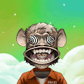 CryptoGangs Canna Crypto Gangs 提供 2,100 个身份，表明他们与 5 个帮派中的 1 个有隶属关系，每个帮派由 420 个 NFT 组成。Crypto Gangs 结合大麻和加密货币，与强大的大麻合作伙伴合作，为
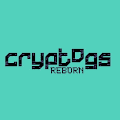 Cryptogs Reborn - Genesis ▶ 什么是 Cryptogs Reborn - Genesis？ Cryptogs Reborn - Genesis 是一个 NFT（不可替代令牌）集合。存储在区块链上的数字艺术品集合。 ▶ 有多少 Cryptogs Reborn - Genesis 代币存在？ 总共有 71 个
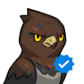 CryptoNinja Partners Polygon CryptoNinja Partners (CNP) 是由 CryptoNinja 子角色主演的 22,222 件作品集。成为拥有者，踏入令人兴奋的忍者世界！今年5月15日发售以来，流通总额突破2,600ETH(相当于5.2亿
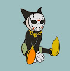 Cryptoon Goonz Originals Cryptoon Goonz 是由著名纹身艺术家 Sean Morgan 设计的 6,969 个怀旧“橡胶软管风格”角色的集合。这些手绘人物的灵感来自他对街头服饰、嘻哈和几代卡通的热爱。 Gooniverse 一直在增长。
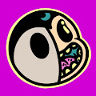 Cryptoon Goonz Portal 原始系列中的每个 Goon都可以前往新世界。但请记住，您的 Portal Goon 和 Original Goon 是同一个角色。如果你卖一个，你就卖另一个。 Cryptoon Goonz Portal NFT 在过去 7 天内售出 9 次。C
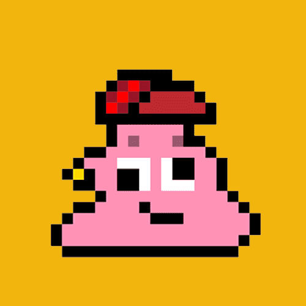 CryptoPooPoos 哦，哦，RayRay 太兴奋了，以至于当爸爸 DOS 不注意时，她会啃其他项目！ CryptoPooPoos NFT 在过去 7 天内售出 7 次。CryptoPooPoos 的总销售额为 55.99 美元
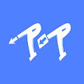 CRYPTOPOP_OFFICIAL Crypto PoP 是由 15 岁的女艺术家创作的 5.5K NFT 女性角色的集合。所有利润的 20% 将用于支持乌克兰母亲和儿童——战争的受害者。 传播包容性、多样性和善意。 我们收集的
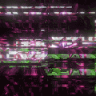 CryptoPortals V2 Elizarevfx 独特的动画收藏品。///// 扫描二维码进入网站，查看Hi-rez收藏品！///// 加入我们的 Discord：https ://discord
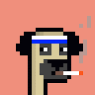 CryptoPugsNFT CryptoPugs 是 3,500 个独特的、随机生成的哈巴狗的集合，它们作为 ERC-721 NFT 在以太坊区块链上漫游。每个 CryptoPug 都是独一无二的，并且是通过无限组合属性和特征（如背景、皮肤、
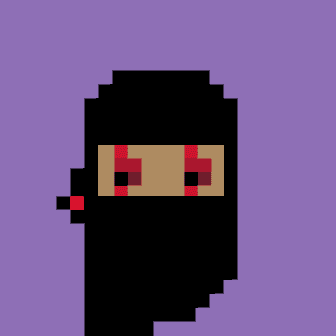 CryptoPunk Ninja CryptoPunk Ninjas 系列包含 101 - 1/1 数字手工制作的 NFT。 专注于间谍、欺骗和突然袭击的非正统战争艺术 - 每个可收藏的 CryptoPunk Ninja 都是独一无二的。 该项目不隶属于 Larva Labs
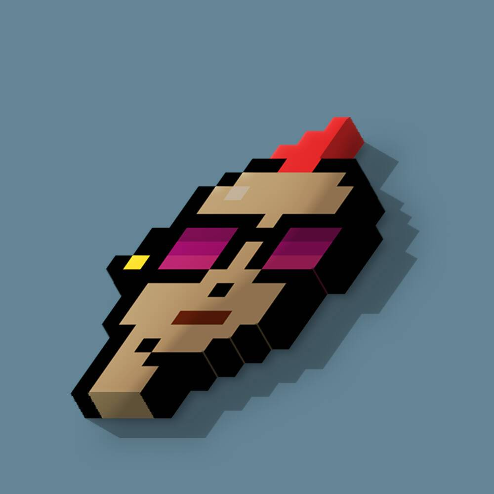 CryptoPunks 3D CryptoPunks 将以 3D 格式回归！他们和以前一样英俊！每个朋克都花费了大量的过程来将其渲染为 3D 格式；结果非常出色。 不隶属于任何实验室、僵尸或地精。 ▶ 什么是 CryptoPunks
CryptoPython 加密艺术家 Marina White 的 CryptoPython 收藏（以太坊）。 价格： 0 到 499： 0.02 Eth； 500 到 999： 0.03 Eth； 1000 到 1499： 0.04 Eth； 1500 到 1999： 0.05 Eth； 2000 到 24
CryptoRappers Gang CryptoRappers 是以太坊区块链上 10,000 个说唱歌手 rhymin 的生成 NFT 收藏品，作为托管在 IPFS 上的 ERC-721 代币。它们的创建是为了给朋克世界带来平衡，他们的摇滚派对不可能永远持续下去
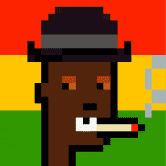 Cryptorastas 问候 breddas 和 sistrens，我和我向您介绍 Cryptorastas！这不仅仅是另一个 NFT 集合：它是一个充满爱和 I-nity 的社区！由 Digitaldubs 创建，这是一个在雷鬼
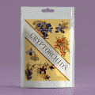 CryptOrchids CryptOrchids 是存在于以太坊区块链上的 NFT 花。CryptOrchids非常敏感，必须每 7 天浇一次水，否则它们会死亡。死掉的 CryptOrchid 不能在 OpenSea 等市场上出售。Cryp
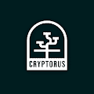 Cryptorus V1 欢迎来到 Cryptorus Land 经过漫长的加密冬天，恐龙在像素中重生。科学家们创造了 Cryptorus Land，以便恐龙能够生存。冒险者来到这片土地，寻找恐龙蛋。几天后，一位冒
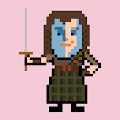 CryptoScots 加密苏格兰人 基于 Polygon 的非常苏格兰式的 NFT 集合 10000 个独特的 CryptoScots！一个非常苏格兰的 NFT 集合，建立在 Polygon 上。选择你最喜欢的英俊苏格兰人，加
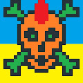 Cryptoskulls & Ukraine CryptoSkulls 是存储在Ethereum / Polygon区块链上的 10,000 个可收藏的 ERC-721 非同质代币 (NFT) 。 每个 CryptoSkull 字符都是具有唯一性索引属性的唯一像素艺术。此属性显示所
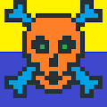 CryptoSkulls Ukraine 每个 CryptoSkull 字符都是具有唯一性索引属性的唯一像素艺术。此属性显示所有图像特征的完全稀有性。具有稀有特征的 CryptoSkulls 具有较少的唯一性指数。 每个 CryptoSkull 都是即将推出
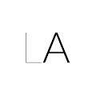 CRYPTOSONOGLYPHS 数字艺术 NFT 代表了一种令人难以置信的令人兴奋的新媒体，能够进行激进和复杂的艺术表达形式。艺术家们现在才刚刚开始探索这些新技术的可能性。 许多 NFT 只
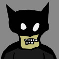 CryptoSpooks Genesis 我们找到了一种更好的方式与我们的恶魔共存，不再被他们困扰。 由 Nabil Zaidi 设计的 3,001 个生成 PFP CryptoSpooks。 ▶ 什么是 CryptoSpooks Genesis？ CryptoSpooks Genesis 是一
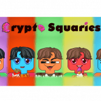 CryptoSquaries Crypto Squaries 是第一个不想成为 NFT 的 NFT。这些可爱、快乐、热爱美食和电影的 Squaries 在他们的广场小镇过着幸福的生活，享受着最好的 Squarie Chefs 提供的美味食物，看电影，吃
CryptOstrich BNB 加密货币 $BNB - 每天 9%使用 OSTRICH 进行安全的 BNB 投资每天获得 9% 的投资回报每天 9%3285% 年利率9% 推荐奖金 - 通过邀请人们加入 BNBOSTRICH 赚取 BNBCRYPTOSTRICH 根据当前的挖矿效率，每天支付
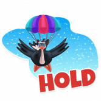 CryptOstrich MATIC CRYPTOSTRICH $MATIC - 每天 9% 使用 OSTRICH 进行安全的 $MATIC 投资 每天获得 9% 的投资回报 每天 9% 3285% 年利率 9% 推荐奖金 - 通过邀请人们加入 $MATICOSTRICH 赚取 $MATIC CRYPTOSTRICH 根据当前的挖矿效率，每天支付 9%。
CryptOstrich TRX 加密货币 $TRX - 每天 9%使用 OSTRICH 进行安全的 $TRX 投资每天获得 9% 的投资回报每天 9% 3285% 年利率9% 推荐奖金 - 通过邀请人们加入 $TRXOSTRICH 赚取 $TRXCRYPTOSTRICH 根据当前的挖矿效率，每天支
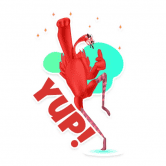 CryptOstrich USDT 加密货币 $TRX - 每天 9%使用 OSTRICH 进行安全的 $TRX 投资每天获得 9% 的投资回报每天 9% 3285% 年利率9% 推荐奖金 - 通过邀请人们加入 $TRXOSTRICH 赚取 $TRXCRYPTOSTRICH 根据当前的挖矿效率，每天支
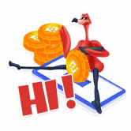 CryptOstrich XRP 加密货币 $ADA - 每天 9%使用 OSTRICH 进行安全的 $ADA 投资每天获得 9% 的投资回报每天 9% 3285% 年利率9% 推荐奖金 - 通过邀请人们加入 $ADAOSTRICH 赚取 $ADACRYPTOSTRICH 根据当前的挖矿效率，每天支
CryptoTitties Official 2018 年 1 月 4 日，在以太坊区块链上披露了 144 个 CryptOtitties 的最大供应量。CryptOtitties AKA CTTs 是区块链上的第 29 个 NFT 项目和第一个 NFT 慈善项目。 受到艺术家
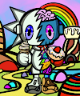 CryptoTwins by VeraTwins 过去 7 天内没有出售 VeraTwins 的 CryptoTwins。 VeraTwins 的第一个已经离线的已知艺术收藏。其中 333 人将在区块链上聚会。 ▶ VeraTwins 的 CryptoTwins 是什么？ VeraTwins 的 CryptoTwins 是一个 NFT
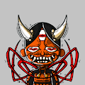 Cryptotz 我们是 4200 CrypTotz，作为 NFTS 在以太坊区块链上引起骚动。我们正在建立一个充满爱心的社区，并在 METAVERSE 中传播积极的氛围！没有路线图！只是共鸣！显示
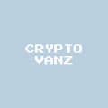 CryptoVanz 我们的系列灵感来自 vanlife 的梦想以及开放道路的快乐和自由。 CryptoVanz3D 是来自@KJE6547 的艺术项目，其灵感来自 CC0 CryptoVanz 系列。它是对原始像素艺术的致敬，通过跨
CryptoVenus CryptoVenus 是 10,000 件随机生成的独特艺术作品的集合，由纽约视觉艺术家 @ericareiling 精心手绘、拍摄和数字处理。 💘💘💘 20% 的销售额捐给了 The Venus Fund，这是一个投资于支持和提
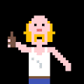 CryptoWiener CryptoWiener 在 Linzer OK 中征服了元界。通过我们真实的像素作品，我们将数字世界转化为模拟展览空间，并创造出多维体验。在展览中，参观者成为数字世界的一部分，学习
Cryptoys Classics Cryptoys Classics 是为该项目的早期支持者创建的 2D 像素化角色。除其他福利外，当我们的 3D 项目于 2022 年启动时，他们将允许早期访问我们的游戏和体验的 beta 测试。 ▶ 什么是
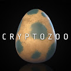 CryptoZoo Base Animal CryptoZoo 是一个自治的生态系统，用户可以在其中购买、出售和交易外来动物混合 NFT。杂种按稀有程度分类；您的动物越稀有，它们的产量就越高！我们的目标是
Cryptx Punks crytpx punks 的灵感来自于区块链上的 xcopy 和 crypto punks。不隶属于 xcopy、larva labs 或加密朋克。这个项目是cc0，你可以用它做任何你想做的事情。 ▶ 什
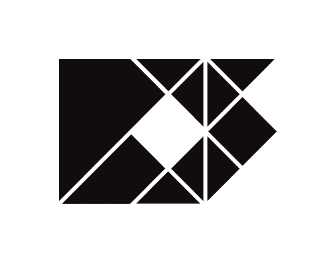 Curators Society (Passes) 策展人协会是首屈一指的元宇宙俱乐部。它是娱乐、非凡活动和友谊的场所；这是一个体验 web3 所提供的最好的地方，而且是在最好的公司里。与其他正在塑造去
CuratorsSociety 策展人协会正在建立一个巨大的蓝筹 NFT 保险库，以造福其社区。每个生成的 1/1 Curators Society NFT 都充当俱乐部会员，同时享有 IRL 和 metaverse 福利——您进入 NFT 卢浮宫会遇到 Soho Ho
Cute Gator Club Genesis 我们是一个 PFP 项目，旨在培养可爱、有趣、滑稽的冒险。 可爱 Gator Club Genesis NFT - 常见问题（FAQ） ▶ 什么是可爱的鳄鱼俱乐部创世纪？ Cute Gator Club Genesis 是一个 NFT（不可